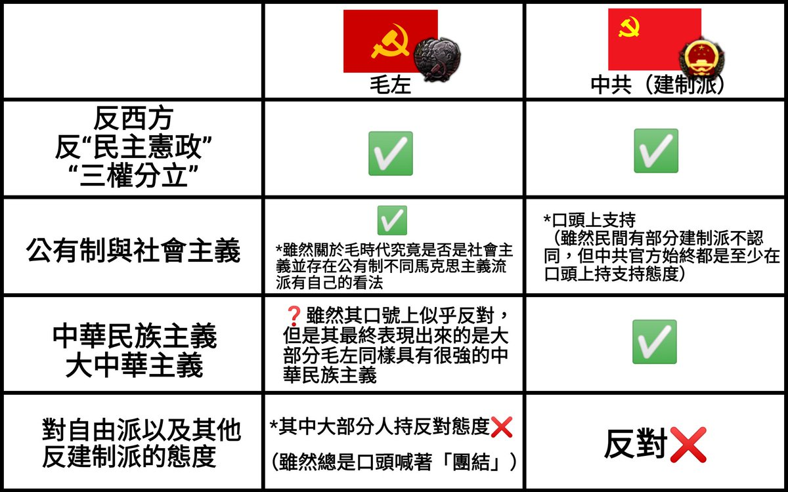

❂🇩🇪🇪🇺🌹𝐀𝐬𝐡𝐥𝐞𝐲 𝐁𝐥𝐨𝐜𝐤🍥🇹🇼🏳️⚧️❀
@bolckAshley
毛左不易被鐵拳打壓在我看來還有一個非常重要的原因：這就是他們在很多方面所支持的東西，都于如今的中共有很多的相似之處（例如他們也反西方與「民主憲政」）。
他們所提出的口號更多也在中共可以接受的範疇之內，並未越過中共的紅線。（6/12）

❂🇩🇪🇪🇺🌹𝐀𝐬𝐡𝐥𝐞𝐲 𝐁𝐥𝐨𝐜𝐤🍥🇹🇼🏳️⚧️❀
@bolckAshley
第一，相較於自由派跟其他反建制派那樣激進的口號，毛左用毛澤東思想作為擋箭牌能使得他們不易被鐵拳。
第二，毛左所玩的那套左翼民粹主義相較於自由派的「民主憲政」思想能夠更好的煽動大眾情緒。他們還可以同時在自己的思想中加入民族主義色彩，進而得到更多普通路人的同情。（5/12）